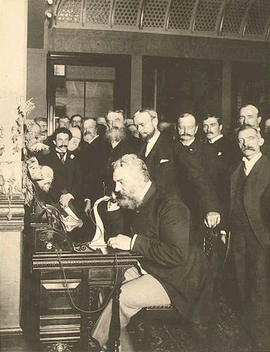

INVENÇÕES E PATENTES
Universidade de Mogi das Cruzes - Sistema Tributário Nacional e Atividades Empresariais
Professora: Vanessa Ester Ferreira Nunes
Universidade de Mogi das Cruzes - Sistema Tributário Nacional e Atividades Empresariais
Professora: Vanessa Ester Ferreira Nunes
As invenções representam o motor do progresso humano, transformando a sociedade em diversas áreas, como tecnologia, saúde, comunicação, transporte e energia. Desde ferramentas rudimentares até dispositivos tecnológicos avançados, cada invenção impacta diretamente a vida cotidiana e a economia mundial.
A proteção legal das invenções é essencial para incentivar a inovação, garantindo que inventores possam explorar comercialmente suas ideias. Sem essa proteção, muitas criações inovadoras poderiam ser copiadas sem reconhecimento ou compensação.
Além disso, o processo de patenteamento fomenta a pesquisa científica, a colaboração entre universidades e empresas, e fortalece a competitividade industrial.
Figura 1: Representação simbólica da criatividade e do surgimento de novas ideias.
Uma patente é um direito exclusivo concedido pelo Estado ao inventor, permitindo-lhe controlar o uso, produção e comercialização de sua invenção por um período determinado. Esse direito garante que terceiros não possam explorar comercialmente a invenção sem autorização.
No Brasil, existem dois tipos principais:
Além disso, existe o Certificado de Adição, que protege melhorias introduzidas em uma invenção já patenteada.
O sistema de patentes é regulamentado pelo Instituto Nacional da Propriedade Industrial (INPI), garantindo que inventores tenham seus direitos reconhecidos e possam monetizar suas criações.
Existem ainda patentes internacionais e acordos de cooperação, como o PCT (Patent Cooperation Treaty), que facilitam o reconhecimento de patentes em múltiplos países.
O conceito de patente surgiu na Europa no século XV, com o objetivo de estimular a inovação e proteger inventores. Países como Inglaterra, França e Itália foram pioneiros nesse sistema. A primeira patente moderna foi concedida em Veneza em 1474.
No Brasil, o sistema formal de patentes começou no início do século XX, mas sua consolidação ocorreu a partir da regulamentação pelo INPI na década de 1970. Desde então, o país adotou leis mais modernas para proteger inventores e estimular a pesquisa tecnológica.
Historicamente, as patentes desempenharam papel fundamental na Revolução Industrial e na expansão tecnológica mundial, garantindo segurança jurídica para inventores e empresas inovadoras.
As patentes desempenham um papel estratégico na economia e na inovação tecnológica. Entre suas principais funções, destacam-se:
Em suma, o sistema de patentes cria um ambiente favorável à inovação, contribuindo para o crescimento econômico e a modernização tecnológica do país.
Ao longo da história, diversas invenções revolucionaram a sociedade e foram protegidas por patentes. Entre elas:
Figura 2: Esquema da lâmpada incandescente patenteada por Thomas Edison em 1879.
Figura 3: Primeiro telefone patenteado por Alexander Graham Bell, marco da comunicação moderna.
Figura 4: Steve Jobs apresentando o Macintosh, representando inovação em computadores pessoais.
O estudo de invenções e patentes permite compreender a relevância da proteção legal para inventores e empresas. Patentes incentivam o desenvolvimento tecnológico, fortalecem a economia e estimulam a competitividade global.
Além disso, conhecer o processo de patenteamento é essencial para profissionais de diversas áreas, incluindo engenharia, administração, direito e pesquisa científica.
Em última análise, o sistema de patentes contribui para a inovação, promovendo um ambiente de progresso contínuo e sustentável.
| Nome | Matrícula |
|---|---|
| Luiz Henrique Ataíde de Oliveira | 11221101605 |
| Maria Eduarda Frois de Oliveira | 11221100738 |
| Gabrielly Almeida Silva | 11221102561 |
| Leonardo Monteiro Alves Brito | 11221104713 |
| Rodrigo Moreno Franzini | 11221100996 |
| Camilo Vaz | 11221100605 |
| João Victor de Oliveira Sousa | 11221101665 |
| Vinicius Dabague | 11221101234 |
| Enzo de Souza Nascimento | 11221101456 |